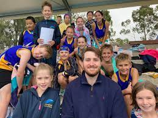

Campus Life

School Church
Was established in 1924
Archbishop Kelly opened the Church. Debt to the National Bank ₤3,578-18-10. Classes began in the Church. Sister Thaddeus in charge. The Sisters of Charity were resident at St. Mary’s, Concord and for 13 years traveled daily to Concord West.

school library
was built in 2020
Our brand new library provides students with access to an extensive book collection as well as a multi purpose space well utilised by teachers and students alike. A love of reading is also fostered through high levels of involvement in the annual Premier’s Reading Challenge and a highly engaging celebration of the Children’s Book Council Of Australia Book Week celebrations each year.
Our library provides a social space to meet, collaborate, research, learn, share, and relax. The staff work to develop a reading culture and raise the levels of information literacy across the school by leading students through processes which empower them to be critical thinkers, enthusiastic readers and skillful, efficient and discerning researchers.

Classrooms
Started renovating in 2020
Our classrooms are designed to promote collaboration and learning for all children. Classrooms are well-equipped with modern furniture and the latest technology which provides students with relevant, purposeful and engaging learning experiences.
School Achievements
.png)
2018: 1st Place (Yr 3 and Yr 4 division) and 1st Place (Yr 5 and Yr 6 division), 2019: 1st Place (Yr 5 and Yr 6 division) and Highly Commended (Yr 5 and Yr 6 division), 2020: Prizes not yet awarded – highest number of entries from our school.
The Young Scientist Awards aims to encourage and support the teaching and development of investigative skills in Science. Being NSW's largest STEM competition, it offers students from Kindergarten to Year 12 the opportunity to investigate and dive deep into an area of interest in either Science, Maths or Technology.
Our students regularly receive recognition for their performance in ICAS testing. In 2020 many students were awarded Distinctions and High Distinctions in English, Mathematics and Science placing them in the top 10% of all students who completed the tests.
ICAS Assessments are designed to recognise academic excellence. Students are assessed on their ability to apply classroom learning to new contexts, using higher-order thinking and problem-solving skills.
What's New?
-
NSWCPS MacKillop Swimming Championships results 2022
Forty-nine young athletes from 20 schools in the Archdiocese of Sydney are set to compete at the NSW Primary School Sports Association (NSWPSSA) Swimming Championships on Wednesday 6 April following a stellar day in the pool.
More than 120 athletes from 52 Sydney Catholic schools competed in the 2022 NSWCPS Swimming Championships at Sydney Olympic Park Aquatic Centre on 22 March.
Forty-nine swimmers collected 60 medals – 25 gold, 18 silver, and 17 bronze.
Compass
Compass will deliver access to relevant and timely information about our school and your child’s progress. Specifically, the portal provides you with the ability to:
*View up-to-date class and school attendance information
*Enter past and future absences for your child
*Access your child’s Semester Reports
*Download and print upcoming excursion information
*Book parent-teacher conferences
*Update your registered email and mobile number (used for SMS alerts)
*Access information regarding upcoming events and news via the School Calendar and Newsfeeds
*The Welcome to Compass brochure provides additional information about the parent portal
Compass is a cloud-based student information system that can be accessed by parents through an online Parent Portal. The portal is accessible via a web browser and/or by using the Compass School Manager mobile application.